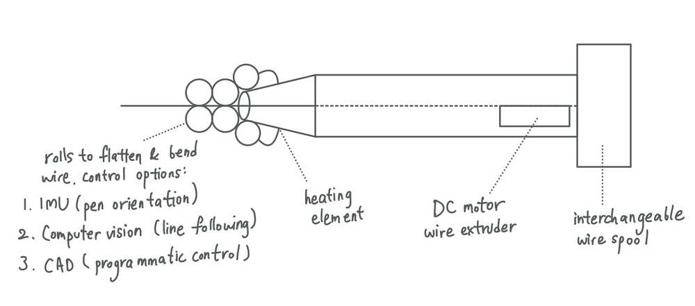

Idea 1: Sound wave physicalization
Joanne, Cathy, Ben, and I are working on a project involving the physicalization of sound waves. The fabricated artifact can be used as an AR token to reinflate past conversation. We could use this class to explore fabrication techniques for such an object.

Idea 2: Light drawing machine
Geometry is beautiful. I would like to explore using constrainted rotating axes to create artwork using light. This reference by James Noland Gandy is a machine that demonstrates geometric principles using ink.

And this inspiration by Daniel Mercadante shows long exposure light painting.

I wonder if I could combine these two in a way to create unique art pieces?
Idea 3: CircuitSmith
Perhaps too ambitiously, I have an idea to create a CircuitSmith, a hand-held 3D circuit printer.
3D printers currently allow printing with conductive filament. This has enabled the creation of 3D objects and mechanisms with sensing capability. When compared to wire bending however, the process of 3D printing is relatively slow and expensive. On the other hand, there are techniques for rapidly manufacturing and shaping wire into springs and other shapes. I am very interested in democratizing this industrial technique via a hand-held tool that makers can use to smith wires into custom 3D shapes.
Pliers can be used to shape wire, however, it is not a casual task to shape wire into tight or regular shapes. Meanwhile, hobby bench wire shaping tools (example) exist, but they require expertise in programmatic tooling. For creating circuits, most industrial processes manufacture PCBs in a way that is harmful to the environment. As one alternative, Samuel Calisch modified a plotter to lay wire. This is very cool and precise, but still restricted to a 2D plane.
CircuitSmith will combine wire bending with features from commercial 3D printing pens to become a hand-held “precise” 3D wire bending tool. Like ProtoPiper, CircuitSmith may have built-in wire-cutting and bonding capability. It may also have a heating element to facilitate wire bending, and to create Nitinol circuits with built-in actuation.
 Image Source: Protopiper
Image Source: Protopiper
Quick sketch for CircuitSmith: 
Ultimately, I would like to create something that can be used to computationally shape wire, perhaps from a CAD model. This additive electronics manufacturing process would be a potential alternative to conventional PCB manufacturing. CircuitSmith can be used to rapidly create antenna, capacitive sensing circuits, and wire art.
 Source: Buzz16
Source: Buzz16
Other form factor inspirations: